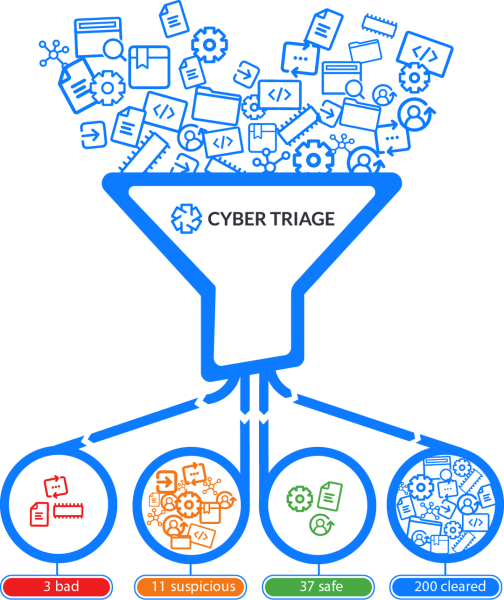
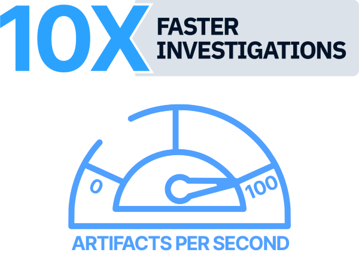
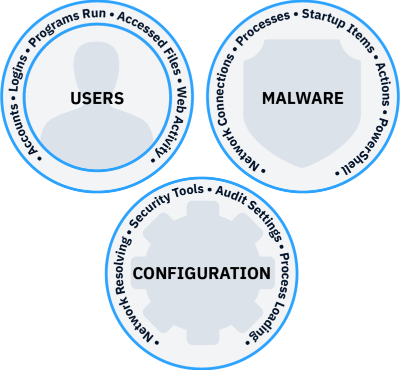
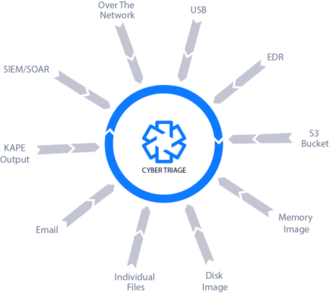

请访问原文链接：Cyber Triage 3.18 for Windows - 面向事件响应的数字取证软件 查看最新版。原创作品，转载请保留出处。
作者主页：sysin.org
唯一专门用于事件响应的数字取证工具
快速、准确和简单地完成入侵调查
Cyber Triage 是一款自动化的数字取证与事件响应（DFIR）软件，旨在帮助安全运营中心（SOCs）、托管安全服务提供商（MSSPs）、顾问和执法机构快速调查网络入侵事件，如恶意软件、勒索软件和账户接管等。
产品概述
调查入侵的新方法
Cyber Triage 是自动化的数字取证和事件响应 (DFIR) 软件，它允许像您这样的网络安全专业人员快速回答与以下相关的入侵问题：
- 恶意软件
- 勒索软件
- 账户接管
它使用基于主机的数据、评分、高级分析和推荐引擎来确保您的调查快速而全面 (sysin)。

DFIR 数字痕迹评分的领导者
Cyber Triage 是唯一能够：
- 对数字痕迹进行评分以确保您快速关注相关数据
- 使用 40 多个恶意软件检测引擎扫描可执行文件
- 在无法使用代理的具有挑战性的环境中部署
- 推荐数字痕迹以确保您跟进所有线索 (sysin)
SOC、MSSP、顾问和执法部门都使用这些功能来回答他们的棘手调查问题 (sysin)，例如“攻击者做了什么？” 和“他们是怎么进来的？”。
更快地完成调查
速度对于确保您在证据被覆盖之前获得证据并将攻击者可能造成的损害降至最低至关重要。
Cyber Triage 通过以下方式最大化您每秒处理的数字痕迹：
- 识别相关的数字痕迹并首先显示它们。
- 推荐数字痕迹，以便您快速跟踪所有线索。
- 与 SIEM 集成，以便尽快开始收集。

进行更全面的调查
调查需要全面，以了解事件的全部范围并消除持久性机制。
Cyber Triage 通过以下方式为您提供广度：
- 根据众多攻击场景收集了数十种神器类型。
- 使用 40 多个恶意软件扫描引擎分析可执行文件。
- 使用威胁情报来更新收集方法和启发式方法 (sysin)。

灵活部署
使用 Cyber Triage 进行的调查有四个基本步骤：
- 数据是使用无代理收集工具收集的，该工具通过网络将数字痕迹发送到 USB 或 S3。
- 使用威胁情报对数字痕迹进行分析和评分。主机之间建立关联。
- 响应者审查数字痕迹并根据他们需要回答的问题进行更深入的研究。
- 从事件中收集并添加其他主机 (sysin)。
Cyber Triage 的设计适用于 Cyber First Responder 所处的任何场景。它可以在笔记本电脑、云或本地服务器上运行。

新增功能
Cyber Triage 3.17: Use AI to Enrich and Report your DFIR Artifacts
Cyber Triage 3.17：使用 AI 增强并生成 DFIR 数字痕迹报告
2026 年 4 月 16 日
Cyber Triage 3.17.0 已发布，允许你将 AI 集成到调查过程中，从而更快得出结论。你现在可以使用 Claude 作为一个只读的 AI 助手，用于增强 Cyber Triage 的分析结果、生成报告以及发现新的线索。
详情请参看笔者相关发布。
下载地址
Cyber Triage 3.5 Release - Merging artifacts, viewing source files, and anomalous logons - November 21, 2022
Cyber Triage 3.6 Release - Processes, OS Accounts, and Indicator Exports - February 20, 2023
Cyber Triage 3.7 Release - Custom File Collection & MITRE ATT&CK - Jun 30, 2023
Cyber Triage 3.8 Release - Includes Autopsy Integration and Malware Scanning Boosts - August 31, 2023
Cyber Triage 3.9 Release - introduces our first incident-level analysis features - December 5, 2023
Cyber Triage 3.10 Release - adds Linux, Domain Controllers, and Fuzzy Malware Scanning for DFIR - May 1, 2024
Cyber Triage 3.11 Release - Access More! BitLocker, new File Explorer, and Export All Files - June 24, 2024
Cyber Triage 3.12 Release - Adds Data Exfiltration Detection, USB Devices, and Easier Validation - Oct 01, 2024
Cyber Triage 3.13 Release - Adds MemProcFS and Extends the S3 and Recorded Future Sandbox Integrations - December 18, 2024
Cyber Triage 3.14 Release - Brings New UIs, Hayabusa, Baselining, and Much More - May 5, 2025
Cyber Triage 3.15 Release - Import Defender Telemetry + More SOC Features - Sep 04, 2025
Cyber Triage 3.16 Release - Investigate Faster with Cyber Triage Enterprise - Jan 15 2026
Cyber Triage 3.17 Release - Use AI to Enrich and Report your DFIR Artifacts - Apr 16 2026
最新版：
Cyber Triage 3.18 Release - New AI + Cloud Automation Capabilities - June 10, 2026
- 百度网盘链接：https://pan.baidu.com/s/1caCcGRchEP_bI_3zDjB_3w?pwd= <专享>
- 系统要求：Windows 7 x64 及更新版本
更多：HTTP 协议与安全

文章用于推荐和分享优秀的软件产品及其相关技术，所有软件默认提供官方原版（免费版或试用版），免费分享。对于部分产品笔者加入了自己的理解和分析，方便学习和研究使用。任何内容若侵犯了您的版权，请联系作者删除。如果您喜欢这篇文章或者觉得它对您有所帮助，或者发现有不当之处，欢迎您发表评论，也欢迎您分享这个网站，或者赞赏一下作者，谢谢！
 支付宝赞赏
支付宝赞赏  微信赞赏
微信赞赏赞赏一下
敬请注册！点击 “登录” - “用户注册”（已知不支持 21.cn/189.cn 邮箱）。 请勿使用联合登录（已关闭）。